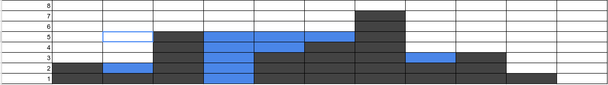

Дан масив чисел, которые представляют собой показатели высоты скал: [2,1,5,0,3,4,7,2,3,1,0]
(для примера дан этот масив, но может быть любой, Ваш алгоритм должен решать все случаи)
Посчитать количество воды (количество синих ячеек), набранной в ямы после дождя.
Нужно по возможности использовать методы массива, а не обычные цыклы.
Например, в даном примере правильный ответ: 10
